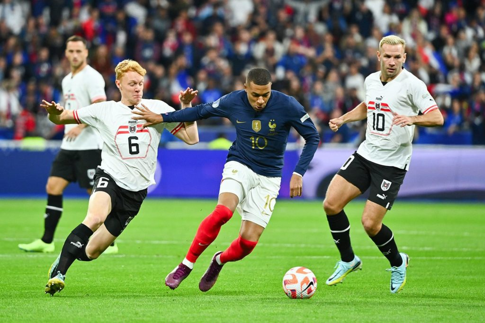
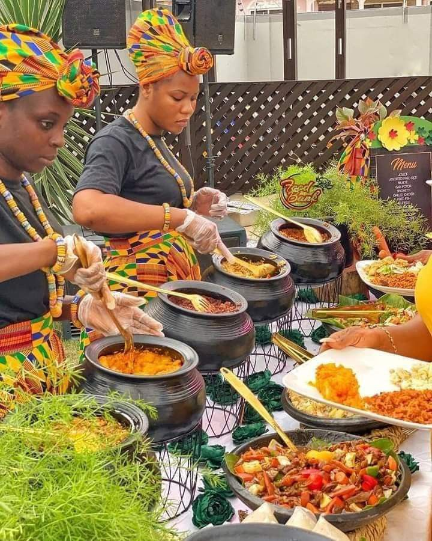

Reading novels
Gaming
Playing music
Football
Watching Movies
Travelling
My name is Jeff Mgbeahuruike, an optometrist and tech-enthusiast trying to venture into the world of Tech.
So far I have learnt how to create HTML file and the structure, create a web page and insert images.


About Me
I am a passionate backend developer beginner, eager to build scalable and efficient web applications.
Currently learning Django and Python,
I enjoy working with databases, APIs, and server-side logic.
Always open to learning new technologies and improving my coding skills. 🚀
My Favorite Things
Soccer
Soccer is my favorite sport because it brings excitement, teamwork, and strategy together.
Whether playing on the field or watching a match, the energy and passion of the game are unmatched.
It’s a great way to stay active and connect with people worldwide.
Food
Food is more than just nourishment—it's an experience! I love trying different cuisines, from spicy dishes to sweet desserts. Exploring new flavors and recipes is a fun and delicious way to appreciate different cultures.
Gyming

Going to the gym is my way of staying fit and healthy. Lifting weights, cardio workouts, and strength training help me stay energized and focused. It’s not just about physical fitness but also mental discipline and self-improvement.